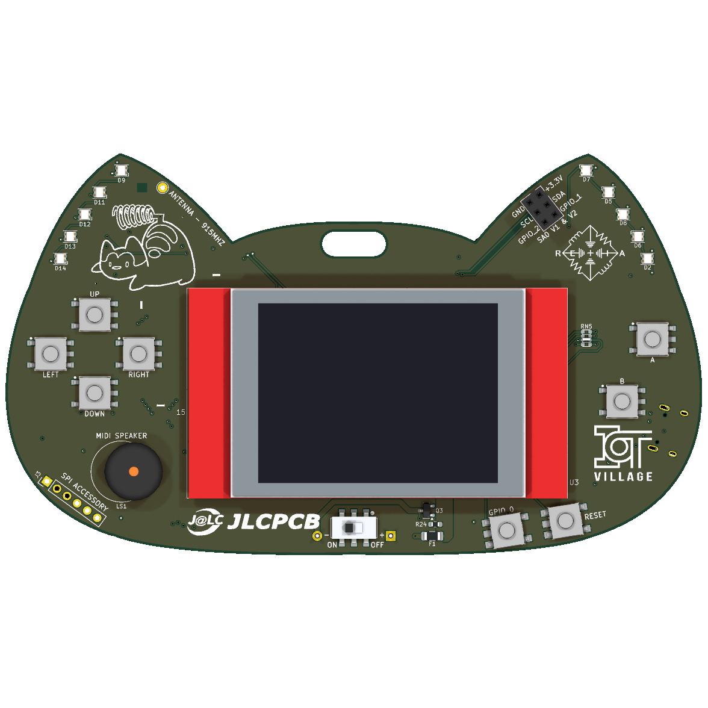
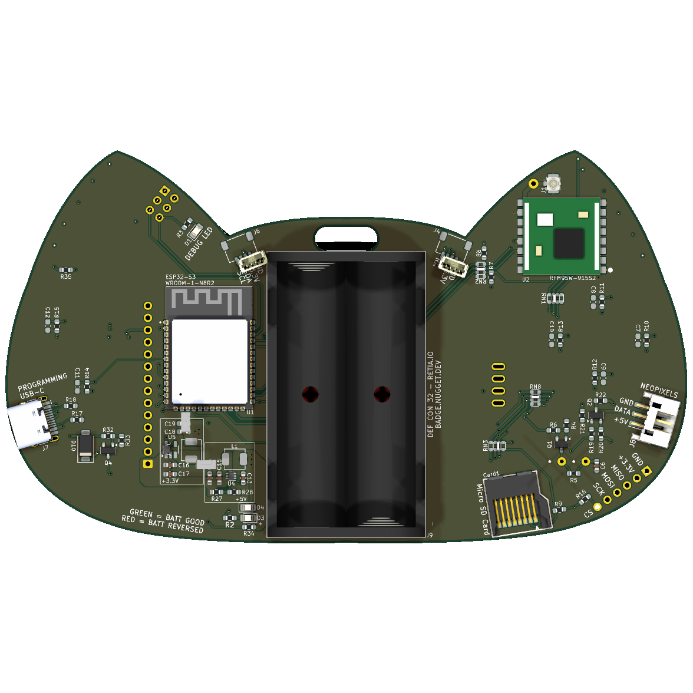
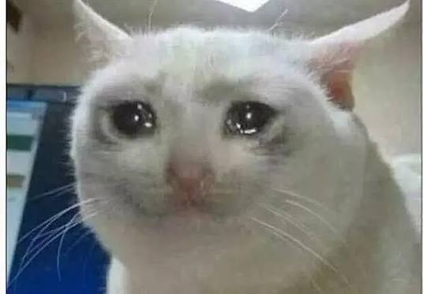

This handsome radio cat is an ESP32-S3 with a color touchscreen, a 915 MHz LoRa radio, ten NeoPixels, and a piezo that plays sound effects.
It's built for DEF CON 2026 to make hacking the mesh easy for beginners, and to give everyone the agency to choose how they communicate in an uncertain future.



Your cyber cat is ready to yowl on the mesh! Here's how to get your radio meowing.
/dev/cu.usbmodem*, Linux: /dev/ttyACM0, Windows: COMx.
The badge is your beginner guide to LoRa — a radio that talks over very long distances: a lower data rate than Wi-Fi, but much longer range. Meshtastic, MeshCore, and Reticulum are three decentralized, encrypted takes on off-grid communication built on it — no towers, no accounts, no middlemen. The badge runs all three, so you can explore each and decide for yourself.
Flashing happens in your browser over Web Serial — every image is a complete .factory.bin written at offset 0x0. Close any open serial monitors first (one client per port), plug the badge in, and let 'er rip.
Firmware in the repo uses the 115200 baud rate. Click connect, select your board, and you're ready!
meshtastic --port PORT --info. Human-readable logs live on the UART header (J4).
rnodeconf --info PORT. The TFT build shows frequency, airtime and channel load live on the badge screen.
Every image is hardware-verified — hit flash to load it into the flasher above.
hello-badge is buttons + LED + buzzer in 100 lines. Copy one as a template.The full case-design kit, straight from the KiCad sources. The board is 142.4 × 81.0 mm with a 25.5 mm total assembly height (display glass to battery holder). Give your cat a house.
![[svg]](case/badge-outline.svg){kind=link}